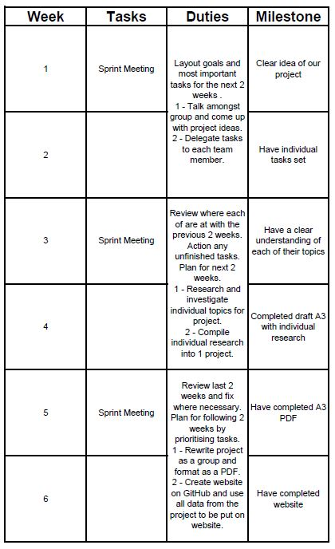
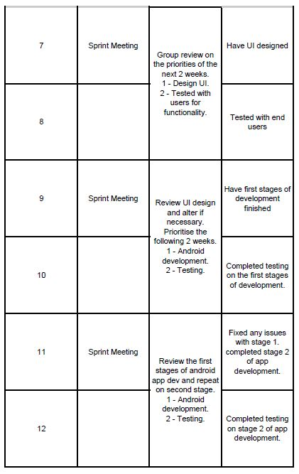
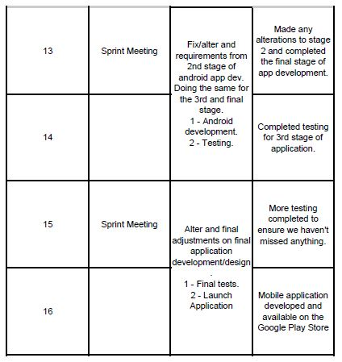
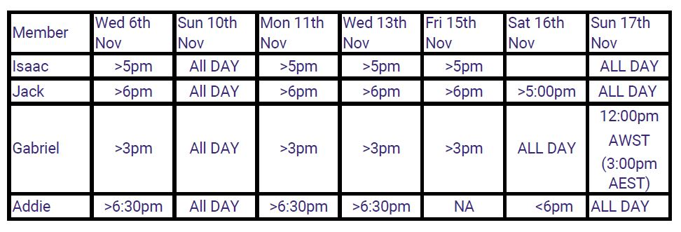

Project Description
Overview

Topic:
As a team, Fully Developed aspire to create an application that provides users with health advice.
This application focuses on the user's mental/emotional state, on mobile devices and would help you to discern your current mood,
record your daily trends/habits/stress levels and empower users to contextualise their mental health and encourage self management.
Our team looked into this niche market and found that predominant tracking of mental health was done via paper based, diarised note taking.
With the growing use of mobile devices, according to Canadian article Dec 2013 ” Phone use at the time, i.e. text msg(88%) & app use 68%
and has a whole segment re. Apps for heath” (stats), we aim to create a simpler, more effective and efficient way to connect this data
from the patients, and make this data more accessible for professionals accessing and evaluating this information.
We deem MiDay of significant opportunity and benefit to society and encourage the philosophy it represents. Focusing on the MiDay
application development over the course of 16 weeks, we would hope to inspire and gain sponsorship and/or potential investors.
Fully Developed believes that we can create this service for the benefit of society and would like to present you with our new project.
Motivation:
Fully Developed recognise the current opportunity in the area of mental health management in society; In Australia,
1 in 5 report that they have taken time off work, due to feeling mentally unwell in the past 12 months and untreated mental
health problems is costing workplaces approximately $10.9 billion on an annual basis.
The ease of usability and accessibility for both the client and professional and having both mood and habit tracking in one app are
what differentiates us from the current applications available within the market. The typical millennial, for example,
will open their smartphone applications more than 50 times per day.
Landscape:
While there are applications that deal with mental health, such as ReachOut Breathe (an app that monitors your heart rate
and helps you to relax yourself when hyperventilating), our application MiDay is multifaceted, providing support to users
with their stress, emotional wellbeing and support resources, making our application truly unique.
MoodKit is another competitor on the market, a therapy tool that is used to improve your mood by a series of activities.
While MoodKit and MiDay have a similar focus on mental health and wellbeing, MiDay is more statistics based, focusing on
tracking your moods, contextualising emotions and acting as a conduit between the user and their nominated contact (i.e
health professional and/or informal support) for empowerment. While there are a number of mental health applications available,
we believe that MiDay truly fills a gap in the market.
Detailed Description
Aim:
Our aim is to create an app that allows discrete mood/habit tracking in an encouraging way to help contextualise feeling
to build positive habits. With untreated mental health costing Australian businesses $10.9 billion a year, there is very
much a lack of support for people who suffer from mental health problems. Whether that be due to insufficient government
funding or the fact that people are embarrassed and are not wanting to seek advice. There is a huge market and need for services like this.
Objectives:
We all go through very different moods/trends some good some bad and being able to distinguish or recognise which are good
and which are bad will allow the user to action these trends accordingly. With good trends, they can recognise these aspects
and focus on what is causing the good trends/habits and continually improve on them. When it comes to the bad trends, it is
very important to be able to see what is causing these so they can grow and learn from them.
We also want to bridge the gap between doctors and people who suffer from mental health issues as there are stats that show
once downloaded a lot of the current apps are then deleted within a month of installing. ‘The evidence base behind these apps
is developing all the time,’ says Dr Jade Sheen, a senior lecturer in clinical psychology at Deakin. ‘There is emerging
evidence that these applications can be just as effective (as face-to-face therapy).’ So by teaming up with doctors and
incorporating the app as part of their “homework” this will give the doctors a better understanding of the patient and the
bespoke nature of every individual.
Another big reason that current apps are deleted shortly after downloading is that they are intimidating and overwhelming
and are primarily focussed on self-diagnosis rather than seeking an aiding professional. By using terms like “homework”
instead of “treatment” it is a little more friendly and less problematic for the end-user. The main objective is to make this
app easy to use and as unobtrusive as possible to allow users to be comfortable using our app in the privacy of their home or with company.
Progress and Plans:
We plan to put a great amount of effort into our project, we aim to achieve a great outcome and a helpful service that will be used publicly.
This project will be developed within our 15 week timeframe, we will incorporate many uses for this app; the app will monitor your inputs
and record the trends of your moods and habits. We plan to use technical software to develop this application and we also plan to pitch
this project to potential investors and sponsors. We want this project to be accessible by everyone, it is only necessary
to spread the word; through advertisement, promotion and distribution in order to continue business growth and development.
The development of this application is in very early stages, we have not started creating functional software yet. Currently we are
expanding on the concept idea that we would like established as an application. The members of Fully Developed have already started
designing mock-ups of the UI and the layout of the application that look very promising. The planning process has already begun and
we have a good outline of our application.
The concept of this project was introduced shortly after the team members of Fully Developed had met. Fully Developed came together
in order to create a project. The initial idea of the project was suggested by one of our hard-working team members; Addie Priaulx.
She suggested that we make a mental health tracking system that would track user’s mental / emotional status. The program would
receive inputs and respond with feedback for the user to review. The other members of Fully Developed agreed with this idea and we
have continued to produce this project.
As mentioned before, we have only just begun planning this project, we are only just figuring out how the project will work. Knowing
that there are 10 stages for this project, it would be safe to say that we are in Stage 2, Stage 1 being ‘concept idea’, Stage 2
being ‘pre-development’, and Stage 3 possibly being; ‘project scoping’.
A few “dead-ends” that we encountered involved market limitation, people would have access to this service through many providers of
healthcare, so we would need to liaise with multiple companies and government organisations to get market share. Before we had an
understanding of what this project would be, we introduced project ideas that have been thrown out, for example; this application
was initially was going to be utilised to track updates on investments.
Even though this project was originally an investment tracking one, we decided to keep the idea of “tracking” something.
This eventually turned into our mental / emotional tracking system. We explored many functions that would be used for the
application; the main aspects involving the app asking you questions like; “What is your mood right now?” and “What is
your current stress level?”. While it is not a dead-end decision, we are postponing the IOS development and focusing
more on the development of the Android system based on the team's current skillset. Our team will further discuss these
developments within our projected timeline through our “sprints”, these will enable us to constantly grow, change, adapt
and prioritise; we may also find that there are limitations that will affect our project that we have not yet discovered.
We have been continuing to create this project; multiple designs and layouts are being developed by our team members.
We wish to make this app accessible by anyone, we aim to provide users with a healthy and protected experience.
Roles:
Within fully developed, our project idea will encompass many internal and external staff members. We have chosen this to ensure
we can functionally manage the highest standard of professional development throughout implementation and ongoing maintenance of the program.
Internal:
As a team, Fully Developed currently does not have the software engineering, or the graphic design skill set to develop our
application. As a team, or predominant focus will be on the project management, user interaction and user experience elements,
to ensure our vision is captured throughout design and implementation. As a small start up, we also understand the need for our
team to be multi skilled, in order to save on upfront costs and ensure we have the funds to build to our specifications.
Our initial role format is as follows:
Isaac: Project Leader (app development)
- Overviewing the project design throughout, ensuring our team vision is instilled in the application
Gabriel: Software Design Leader
- Working one on with the lead software engineer to ensure the application is designed to plan
Addie: User Interaction/Experience leader
- Ensuring the application design is user friendly from both the client and management user perspective.
Jack: Client Engagement Manager
- Striving to ensure existing client needs are met and tasks are distributed to correct areas. Seeking out new clientele for business growth.
Fully developed plans to hire two new staff members to bring their expertise to our project. These are:
- Lead Software Engineer
- Head Graphic Design Specialist
Choosing the correct Software engineer that shares our vision for this project will be vital to ensure synchronicity across
all aspects of the design. Keeping in mind the size of our project and funding. The software engineer will need to be skilled in
both Android and IOS software, to ensure we can fluidly adapt our systems to the various operating systems used by the target market.
The head graphic design specialist will be hired to ensure we can put our pre planned designs, and concepts into a functioning model.
Working closely with the software engineer to ensure all system integration is seamless.
External:
With this project idea, we will strive to make this app as accessible as possible to all potential clients in our target market.
In order to do this we will need experts in the external field that work day to day on integrating applications across the various
industry standard platforms such as IOS and Android. We also want to be able to integrate these systems into the ever growing market
of Artificial Intelligence (AI) systems such as Amazon’s Alexa, Apple’s SIRI, and Google’s assistant. In order to do this though, we
would need to outsource these job roles to different system analysts and developers, to ensure we are able to use the application across
the multiple platforms whilst maintaining a centralised control for all data flowing in.
Scope and Limits:
The team would embrace an agile development process, and aim to deliver outcomes in increments.
Acknowledging a process known to the industry, we would apply the following structure to our application development...
Conceptualise
Pre development
Project scoping
Wireframing
Design
Development
Beta testing
Investment
App launch
Post launch
The team are currently in the pre development phase and have established that, throughout the ongoing development process,
we would host sprints every two weeks. Our initial meeting would create a TODO list, which is constantly growing and evolving.
We use the sprints to prioritise tasks, and acknowledge our backlog, then regroup every two weeks at the beginning of
the next sprint, to reprioritise. We’d apply estimations on the effort required to complete each of the tasks assigned to our sprint.
While effort is an arbitrary measure, it’s preferred over applying presumed time frames, which is inefficient. Following each sprint, we
review and compile the effort points for completed tasks (velocity) and use this to forecast tasks and the effort available for the next.
We’ll find ourselves in situations where we’re unable to complete the agreed list or we’re dissatisfied with our deliverables, and thereby
choose to repeat. Our client would have a constant feedback loop, where they can offer their own feedback and direction, of which contributes
to changes in priorities and the addition/removal of tasks, otherwise known as the ‘Product Owner’ of the process.
Originally we considered using framework like React and React Native Paper, so that only a single shared codebase would be
possible for every platform; thereby, minimising maintenance costs and (ideally) making the app as identical as possible. Upon reflection,
having one user interface on both Android and IOS would compromise the default navigation and UI paradigm on one or both platforms,
affecting the overall user experience. We’ve since chosen to work to our available skill set and create separate applications for Android
and IOS, prioritising Android. Furthermore, we consider this change more respectful when trying to make the most of the time available.
Tools and Technologies:
In order to offer a cross platform and identical user experience, we would develop two separate applications; one for IOS and one for Android.
Considering the steep learning curve involved and the reality that Gabriel and Isaac are the only Fully Developed team members with
exposure to programming (specifically ‘Java’), it would be prudent to separate the development process, focusing on Android first.
As opposed to the ambitious task of creating a single shared codebase that would work on every platform, of which would deliver a
suboptimal user experience.
Tools and technologies involved to create the application:
- IDE for IOS app: Xcode 11.2.1
- IDE for Android: Android Studio 3.1
- Maintain & ad hoc tasks: Visual Studio Code 1.38.0
- Working & design: Draw.io 10.7.5 and Balsamiq 3.5.17
- Source Control (Git): Github OR Bitbucket
- Project Management tool: Jira
- An iPhone 11 and Android device (such as: Google Pixel 4) for testing.
- Mac specifically for developing/deploying/testing an iPhone.
Testing:
In order to make sure that our application is functional and enjoyed by users we will require feedback from users through
various methods of user testing. We seek to employ a great amount of testers so that we can gain many perspectives on all aspects
of our project. Testers will be exploring the apps functions, the UI, the reliability of the app, and how this app may improve their state of mind.
Once testing is done, all data will be collected and reviewed by Fully Developed to learn what can be improved, modified or changed
according to the user`s requests. This app has been made so that everyone should have access to it, and because this app contains
personal and private information, we aspire to bring reliable security and unstoppable systems. We plan to do this by employing a
third-party for penetration testing, we want to provide a safe experience for all customers and investors. Finally, we value the
safety of our users personal information, so we will make sure that the overall functions of the app are in accordance with all privacy legislation.
Timeframe:



Risks:
The nature of the application we’ve conceptualised is ‘mission critical’, which puts our service at risk from a number of angles.
Cyber attacks threaten to steal or expose sensitive information, disrupt or obstruct our service, and the steep learning curve for
our team presents the opportunity for financial loss, whereby our lack of understanding could create inefficiencies, stagnation and
errors throughout the project.
While the list of possible cyber attacks is lengthy, our main concerns are those such as SQL injections, Denial of Service and
Man-in-the-middle attacks. We’ve elected to be a cloud-based application, using Amazon as our provider and employ a web service
to move the data from local devices to the cloud, and encrypt all that’s in transport, then encrypt any personal details at the storage level.
Recognising the sensitive information we’re handling, it would be prudent to employ rigorous and defensive code testing, employing a
third party to perform penetration testing for example; which would highlight risks and opportunities from an external perspective.
All the while, the learning curve for our team members is high due to our current skill set and the allowed time frame. There’s the
opportunity for misinterpretation of product features or, for example, how to use Xcode and/or Android Studio, thus causing inefficiency
or stagnate progress.
There’s the possibility of being unaware of UI controls that may not necessarily be available on Xcode or Android Studio, and then
be required to purchase them separately from a third party provider.
We’ve prioritised the Android application over IOS, given Gabriel and Isaac’s exposure to Java, working in periodic releases, allowing
us a chance to break down our goals, focusing on micro tasks and achieving them as effectively as possible. We consider this the best
approach, instead of leaping into the deep end, risking erroneous work, brand image and reliability.
Group Processes and Communication:
Fully Developed comprises of 4 members that are not only located in various states, but also governed by varying work and school
schedules. In order for us to maintain communication, we have had to make use of a variety of applications and programs to ensure
we could always pick up from where another has left off. Our team has evolved this process over the semester through the use of
various applications such as Discord, Whatsapp and Google Drive as we were not able to meet up face to face.
- Discord: Used for general project conversation and brainstorming.
- Whatsapp: Used for video conference style conversations, brainstorming and general discussion.
- Google Drive/docs/sheets: used for file sharing and compiling assignment documentation.
- GitHub: Used for creating group website.
- Draw.io: Used for visualisation of application ideas.
- Balsamiq: Used for wireframes.
Through the use of these multiple applications, we were able to maintain steady workflow, including work distribution.
Although our group was in near day to day contact leading up to the final 2 weeks pre submission, via instant messaging,
we also used the below schedule to organise times that we were all available to communicate and brainstorm project ideas and logistics.
ALL IN AEST

Skills and Jobs:
The new development we would add with the extra funding is the integration with voice assistant controls, starting with Google
Assistant and then moving onto Siri and Amazon Alexa. Allowing an additional way to log moods/habits. I.e. User says,
“Hey, Google/Siri/Alexa, How’s my day looking?” Google/Siri/Alexa responds “Today will be 17 drgrees and mainly fine,
you have your first appointment at 2 pm. How are you feeling this morning?”
The 4 positions we would need to fill to ensure the further development is successful are:
- AoG (Action on Google) Developer
- This role would focus purely on the integration between Google Assistant and our application.
- Siri Voice Assistant Applications Developer
- In charge of handling all the Siri integration with our application.
- Amazon Alexa Skill Development
- Alexa would also have their own dedicated integration expert who would seamlessly integrate our application with Amazon Alexa.
- Dedicated Tester
- This person would test and debug all 3 voice control integrations with our application. They would need a broad knowledge of
both IOS and Android operating systems and would need to think like a user to gain the best user experience from all 3 services.
All 3 developers would need to be experienced in software/app development and API integration. We would hire people who have specific
knowledge on each of the 3 platforms and would require them to have a minimum of 3 years experience in said platform.
The tester would also need to have a good understanding of all 3 types of platforms to ensure efficient debugging and be a critical and
innovative thinker to guarantee optimal user satisfaction.
As we do not have an office for the new team to set up in they would need to be able to work autonomously from home and without
supervision yet able to work collaboratively as a team to produce an end result that flows seamlessly with our application and with one another.
As the manager of the new team we would have requirements for daily logs of tasks completed and fortnightly ‘sprint’ sessions to make sure
everyone is on track for completion by the 6 month deadline.
Feedback:
Group Reflection:
Isaac: There has been so much input by everyone in our group and the ideas from each member have been brilliant. We did decide to change
project ideas late in the project which set us back but have all worked hard to make sure it has been completed in time.
Communication has been the biggest issue for Fully Developed as being in different states it has been hard to get everyone together
to discuss topics as a team. This makes it hard to finish topics as we need to wait for everyone’s input.
I have learnt that is is vital for clear and precise organisation to complete the required tasks in a timely and stress-free manner.
If we were able to come up with solid individual and team objectives at the start of the project we may have been able to avoid the
stress caused by lack of communication.
With the use of discord, WhatsApp and GDrive we were able to collaborate on the same project and from different states which has worked really well.
I am overall very happy with my team and would happily work with them all again on future projects.
Gabriel: I am very glad to be surrounded by such hard-working team members who have had so many good ideas. One thing I feel has
gone really well with both Assignment 2 and Assignment 3 is the use of google docs, it has enabled us to connect our work in order
to produce a substantial structure for our assessment. Something that we could have worked on was our plan for the assessment.
Unfortunately we did not have a plan for our project / presentation until later in the semester, it was not anyone's fault at all, we
probably could have collaborated with each other a bit sooner, but it seems all is working well in our team, everyone is hard at work
to finish this assessment and I think that we are going to do well. One thing that surprised me was how hard-working my team members
are, they have put so much effort into this group assessment and I am glad to be working with them. A thing that I have learned from
being part of a group is that team-work is such an amazing way to study and get work done. I have found it so much less stressful
knowing that I have such great team members to rely on.
Jack: Throughout my time with Fully Developed, I have been given a great opportunity to work with a great bunch of like minded individuals.
Everyone has been not only easy to connect with, and be happy to get the workload done, but also are so easily accessible to chat at any
time to bring in new ideas and thoughts to our design. Everyone was more than happy to jump on board with new ideas and implement them
into this growing project. For me this is where I think the real skill in project development lies in being able to take on ideas,
praise, and criticism from all individuals involved to grow and expand our concept.
I’m sure my team would agree, but more structure on how we got together for group ‘meetings,’ would have been beneficial for us all.
With all of us in different time zones and having differing daily schedules, its hard to maintain a ‘throw together’ meeting at any
one point with all involved. That being said I think our communication has still been strong on our messaging apps, and we have all
been able to keep track of inputs from individuals.
Github once again in this project will not accurately show our workload. Using our tools such as google sheets and google docs has
allowed us to evenly distribute the workload amongst us. It has also allowed us to specialize in different areas, utilising the group skill set.
Addie: The team camaraderie is commendable and I’m still surprised by how well everyone was able to give and receive feedback;
I really appreciated that.
Our opportunity to improve is our reliability vis a vis group communication. This sounds fairly innocuous, but when you cannot
organise a time to catch up and discuss the project, it becomes an issue.
On reflection, using avenues like Google Forms or easypolls to establish date/times when everyone’s free to connect and discuss
as a team would have helped significantly.
Next time, I would want to ascertain everybody’s availability at the beginning. when everybody is available and unavailable - something
to use as a rough guide to better manage the flow of GROUP communication, instead of one on one tidbits.
Once we got going, our communication across tools like Discord and Whatsapp was constant and thorough. Team use of Gdrive has been
fairly active and engaging since - go team.
I feel that our GitHub activity, perhaps, doesn’t best reflect our level of participation, which was fairly supportive
and balanced throughout.
Group: Fully developed have once again completed their next assignment. All team members efficiently worked towards their
given tasks throughout the team project. We have seen a lot of improvements in our group; we have been able to communicate
efficiently, help each other with our work, and create a fully fledged plan for our project. Initially we had planned to
continue our Assessment 2 project idea, but upon review of our feedback, we decided on MiDay, which has a more transferable
concept for all team members to understand and contribute to.
With respect to the great work that has been completed, our area of improvement was our initial communication, thereby
affecting our project conceptualisation and work thereafter.
Despite this, we were able to persevere and complete the task at hand. It was surprising to see how the team rallied;
when communicating, brainstorming and executing our project, we continued to help and encourage each other.
Fully developed, worked well as a team from start to finish, remaining supportive throughout, and readily taking on each others
feedback in order to improve and expand on our concepts.